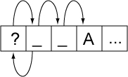

Unicode Standard Annex #29
Text Boundaries
| Version | Unicode 5.0.0 |
| Authors | Mark Davis (mark.davis@google.com) |
| Date | 2006-10-12 |
| This Version | http://www.unicode.org/reports/tr29/tr29-11.html |
| Previous Version | http://www.unicode.org/reports/tr29/tr29-9.html |
| Latest Version | http://www.unicode.org/reports/tr29/ |
| Revision | 11 |
Summary
This annex describes guidelines for determining default boundaries between certain significant text elements: grapheme clusters (“user-perceived characters”), words, and sentences. For line break boundaries, see UAX #14, “Line Breaking Properties.”
Status
This document has been reviewed by Unicode members and other interested parties, and has been approved for publication by the Unicode Consortium. This is a stable document and may be used as reference material or cited as a normative reference by other specifications.
A Unicode Standard Annex (UAX) forms an integral part of the Unicode Standard, but is published online as a separate document. The Unicode Standard may require conformance to normative content in a Unicode Standard Annex, if so specified in the Conformance chapter of that version of the Unicode Standard. The version number of a UAX document corresponds to the version of the Unicode Standard of which it forms a part.
Please submit corrigenda and other comments with the online reporting form [Feedback]. Related information that is useful in understanding this annex is found in Unicode Standard Annex #41, “Common References for Unicode Standard Annexes.” For the latest version of the Unicode Standard, see [Unicode]. For a list of current Unicode Technical Reports, see [Reports]. For more information about versions of the Unicode Standard, see [Versions].
Contents
- 1 Introduction
- 1.1 Notation
- 2 Conformance
- 3 Grapheme Cluster Boundaries
- 4 Word Boundaries
- 5 Sentence Boundaries
- 6 Implementation Notes
- 6.1 Normalization
- 6.2 Replacing Ignore Rules
- 6.3 Regular Expressions
- 6.4 Random Access
- 6.5 Tailoring
- 7 Testing
- Acknowledgments
- References
- Modifications
1 Introduction
This annex describes guidelines for determining default boundaries between certain significant text elements: grapheme clusters (“user-perceived characters”), words, and sentences. The process of boundary determination is also called segmentation.
A string of Unicode-encoded text often needs to be broken up into text elements programmatically. Common examples of text elements include what users think of as characters, words, lines (more precisely, where line breaks are allowed), and sentences. The precise determination of text elements may vary according to orthographic conventions for a given script or language. The goal of matching user perceptions cannot always be met exactly because the text alone does not always contain enough information to unambiguously decide boundaries. For example, the period (U+002E FULL STOP) is used ambiguously, sometimes for end-of-sentence purposes, sometimes for abbreviations, and sometimes for numbers. In most cases, however, programmatic text boundaries can match user perceptions quite closely, although sometimes the best that can be done is not to surprise the user.
Rather than concentrate on algorithmically searching for text elements (often called segments), a simpler and more useful computation instead detects the boundaries (or breaks) between those text elements. The determination of those boundaries is often critical to performance, so it is important to be able to make such a determination as quickly as possible. (For a general discussion of text elements, see Chapter 2, General Structure, of [Unicode].)
The default boundary determination mechanism specified in this annex provides a straightforward and efficient way to determine some of the most significant boundaries in text: grapheme clusters (what end users usually think of as characters), words, and sentences. Boundaries used in line breaking (also called word wrapping) are to be found in [LineBreak].
The sheer number of characters in the Unicode Standard, together with its representational power, place requirements on both the specification of text element boundaries and the underlying implementation. The specification needs to allow for the designation of large sets of characters sharing the same characteristics (for example, uppercase letters), while the implementation must provide quick access and matches to those large sets. The mechanism also must handle special features of the Unicode Standard, such as nonspacing marks and conjoining jamo.
The default boundary determination builds upon the uniform character representation of the Unicode Standard, while handling the large number of characters and special features such as nonspacing marks and conjoining jamo in an effective manner. As this mechanism lends itself to a completely data-driven implementation, it can be tailored to particular orthographic conventions or user preferences without recoding.
As in other Unicode algorithms, these specifications provide a logical description of the processes: implementations can achieve the same results without using code or data that follows these rules step-by-step. In particular, many production-grade implementations will use a state-table approach. In that case, the performance does not depend on the complexity or number of rules. Rather, the only feature affecting performance is the number of characters that may match after the boundary position in a rule that applies.
1.1 Notation
A boundary specification summarizes boundary property values used in that specification, then lists the rules for boundary determinations in terms of those property values. The summary is provided as a list, where each element of the list is one of the following:
- A literal character
- A range of literal characters
- All characters satisfying a given condition, using properties defined in the Unicode
Character Database [UCD]:
- Non-Boolean property values are given as <property>=<property value>, such as General_Category = Titlecase_Letter.
- Boolean properties are given as <property>=true, such as Uppercase = true.
- Other conditions are specified textually in terms of UCD properties.
- Boolean combinations of the above
- The two special identifiers sot and eot stand for start and end of text, respectively
For example, the following is such a list:
General_Category = Line Separator (Zl), or
General_Category = Paragraph Separator (Zp), or
General_Category = Control (Cc), or
General_Category = Format (Cf)
and not U+000D CARRIAGE RETURN (CR)<]
and not U+000A LINE FEED (LF)
and not U+200C ZERO WIDTH NON-JOINER (ZWNJ)
and not U+200D ZERO WIDTH JOINER (ZWJ)
In the table assigning the boundary property values, all of the values are intended to be disjoint except for the special value Any. In case of conflict, rows higher in the table have precedence in terms of assigning property values to characters. Data files containing explicit assignments of the property values are found in [Props].
Boundary determination is specified in terms of an ordered list of rules, indicating the status of a boundary position. The rules are numbered for reference and are applied in sequence to determine whether there is a boundary at a given offset. That is, there is an implicit “otherwise” at the front of each rule following the first. The rules are processed from top to bottom. As soon as a rule matches and produces a boundary status (boundary or no boundary) for that offset, the process is terminated.
Each rule consists of a left side, a boundary symbol (see Table 1), and a right side. Either of the sides can be empty. The left and right sides use the boundary property values in regular expressions. The regular expression syntax used is a simplified version of the format supplied in Unicode Technical Standard #18, “Unicode Regular Expressions” [RegEx].
Table 1. Boundary Symbols
| ÷ | Boundary (allow break here) |
| × | No boundary (do not allow break here) |
| → | Treat whatever on the left side as if it were what is on the right side |
An underscore (“_”) is used to indicate a space in examples.
These rules are constrained in three ways, to make implementations significantly simpler and more efficient. These constraints have not been found to be limitations for natural language use. In particular, the rules are formulated so that they can be efficiently implemented, such as with a deterministic finite-state machine based on a small number of property values.
- Single boundaries. Each rule has exactly one boundary position. This restriction is
more a limitation on the specification methods, because a rule with multiple boundaries could
be expressed instead as multiple rules. For example:
- “a b ÷ c d ÷ e f” could be broken into two rules “a b ÷ c d e f” and “a b c d ÷ e f”
- “a b × c d × e f” could be broken into two rules “a b × c d e f” and “a b c d × e f”
- Ignore degenerates. No special provisions are made to get marginally better behavior for degenerate cases that never occur in practice, such as an A followed by an Indic combining mark.
- Limited negation. Negation of expressions is limited to instances that resolve to a match against single characters, such as “¬(OLetter | Upper | Lower | Sep)”.
2 Conformance
There are many different ways to divide text elements corresponding to grapheme clusters, words, and sentences, and the Unicode Standard does not restrict the ways in which implementations can produce these divisions.
This specification defines a default mechanism; more sophisticated implementations can and should tailor it for particular locales or environments. For example, reliable detection of Thai, Lao, Chinese, or Japanese word break boundaries requires the use of dictionary lookup, analogous to English hyphenation. An implementation therefore may need to provide means to override or subclass the default mechanism described in this annex. Note that tailoring can either add boundary positions or remove boundary positions, compared to the default specified here.
Note: Locale-sensitive boundary specifications can be expressed in LDML [UTS35] and be contained in the Common Locale Data Repository [CLDR]. The repository already contains some tailorings, with more to follow.
To maintain canonical equivalence, all of the following specifications are defined on NFD text, as defined in Unicode Standard Annex #15, “Unicode Normalization Forms” [UAX15]. A boundary exists in non-NFD text if and only if it would occur at the corresponding position in NFD text. However, the default rules have been written to provide equivalent results for non-NFD text and can be applied directly. Even in the case of tailored rules, the requirement to use NFD is only a logical specification; in practice, implementations can avoid normalization and achieve the same results. For more information, see Section 6, Implementation Notes.
3 Grapheme Cluster Boundaries
One or more Unicode characters may make up what the user thinks of as a character or basic unit of the language. To avoid ambiguity with the computer use of the term character, this is called a grapheme cluster. For example, “G” + acute-accent is a grapheme cluster: it is thought of as a single character by users, yet is actually represented by two Unicode code points.
There are many types of Grapheme clusters. Examples include: combining character sequences, such as (g + ring above); digraphs, such as Slovak “ch”, and sequences with letter modifiers, such as kw. Grapheme cluster boundaries are important for collation, regular expressions, and counting “character” positions within text. Word boundaries, line boundaries, and sentence boundaries do not occur within a grapheme cluster. In this section, the Unicode Standard provides a determination of where the default grapheme boundaries fall in a string of characters. This algorithm can be tailored for specific locales or other customizations, which is what is done in providing contracting characters in collation tailoring tables.
Note: Default grapheme clusters have been referred to as “locale-independent graphemes.” The term cluster is used to emphasize that the term grapheme is used differently in linguistics. For simplicity and to align terminology with Unicode Technical Standard #10, “Unicode Collation Algorithm” [UTS10], the terms default and tailored are used in preference to locale-independent and locale-dependent, respectively.
As far as a user is concerned, the underlying representation of text is not important, but it is important that an editing interface present a uniform implementation of what the user thinks of as characters. Grapheme clusters commonly behave as units in terms of mouse selection, arrow key movement, backspacing, and so on. For example, when an accented character is represented by a character sequence, then using the right arrow key would skip from the start of the base character to the end of the last character of the cluster.
However, in some cases editing a grapheme cluster element by element may be preferable. For example, on a given system the backspace key might delete by code point, while the delete key may delete an entire cluster. Moreover, there is not a one-to-one relationship between grapheme clusters and keys on a keyboard. A single key on a keyboard may correspond to a whole grapheme cluster, a part of a grapheme clusters, or a sequence of more than one grapheme clusters.
In those relatively rare circumstances where programmers need to supply end users with character counts, the counts should correspond to the number of segments delimited by grapheme cluster boundaries. Grapheme clusters are also used in searching and matching; for more information, see Unicode Technical Standard #10, “Unicode Collation Algorithm” [UTS10], and Unicode Technical Standard #18, “Unicode Regular Expressions” [UTS18].
The principal requirements for default grapheme cluster boundaries are the handling of nonspacing marks and Hangul conjoining jamo. Boundaries may be further tailored for requirements of different languages, such as the addition of Indic, Thai, or Tibetan character clusters.
A default grapheme cluster begins with a base character, except when a nonspacing mark is at the start of text, or when it is preceded by a control or format character. In place of a single base character, a Hangul syllable composed of one or more characters may serve as the base. For the rules defining the default boundaries, see Table 2. For more information on the composition of Hangul syllables, see Chapter 3, Conformance, of [Unicode].
Note: The boundary between default grapheme clusters can be determined by just the two adjacent characters. See Section 7, Testing, for a chart showing the interactions of pairs of characters.
Degenerate Cases. These definitions are designed to be simple to implement. They need to provide an algorithmic determination of the valid, default grapheme clusters and to exclude sequences that are normally not considered default grapheme clusters. However, they do not have to cover edge cases that will not occur in practice.
The definition of default grapheme clusters is not meant to exclude the use of more sophisticated definitions of tailored grapheme clusters where appropriate: definitions that more precisely match the user expectations within individual languages for given processes. For example, “ch” may be considered a grapheme cluster in Slovak, for processes such as collation. The default definition is, however, designed to provide a much more accurate match to overall user expectations for what the user perceives of as characters than is provided by individual Unicode code points.
Display of Grapheme Clusters. Grapheme clusters are not the same as ligatures. For example, the grapheme cluster “ch” in Slovak is not normally a ligature and, conversely, the ligature “fi” is not a grapheme cluster. Default grapheme clusters do not necessarily reflect text display. For example, the sequence <f, i> may be displayed as a single glyph on the screen, but would still be two grapheme clusters.
For more information on the matching of grapheme clusters with regular expressions, see Unicode Techncial Standard #18, “Unicode Regular Expressions” [UTS18].
Note: As with the other default specifications, implementations may override (tailor) the results to meet the requirements of different environments or particular languages.
3.1 Default Grapheme Cluster Boundary Specification
The Grapheme_Cluster_Break property value assignments are explicitly listed in the corresponding data file; see [Props]. The contents of this data file are summarized in Table 2.
Table 2. Grapheme_Cluster_Break Property Values
| Value | Summary List of Characters |
|---|---|
| CR | U+000D CARRIAGE RETURN (CR) |
| LF | U+000A LINE FEED (LF) |
| Control | General_Category = Line Separator (Zl), or General_Category = Paragraph Separator (Zp), or General_Category = Control (Cc), or General_Category = Format (Cf) and not U+000D CARRIAGE RETURN (CR) and not U+000A LINE FEED (LF) and not U+200C ZERO WIDTH NON-JOINER (ZWNJ) and not U+200D ZERO WIDTH JOINER (ZWJ) |
| Extend |
Grapheme_Extend = true |
| L | Hangul_Syllable_Type=L, that is: U+1100 (ᄀ) HANGUL CHOSEONG KIYEOK ..U+1159 (ᅙ) HANGUL CHOSEONG YEORINHIEUH U+115F (HCF) HANGUL CHOSEONG FILLER |
| V | Hangul_Syllable_Type=V, that is: U+1160 (>HJF) HANGUL JUNGSEONG FILLER ..U+11A2 (ᆢ) HANGUL JUNGSEONG SSANGARAEA |
| T | Hangul_Syllable_Type=T, that is: U+11A8 (ᆨ) HANGUL JONGSEONG KIYEOK ..U+11F9 (ᇹ) HANGUL JONGSEONG YEORINHIEUH |
| LV | Hangul_Syllable_Type=LV, that is: U+AC00 (가) HANGUL SYLLABLE GA U+AC1C (개) HANGUL SYLLABLE GAE U+AC38 (갸) HANGUL SYLLABLE GYA ... |
| LVT | Hangul_Syllable_Type=LVT, that is: U+AC01 (각) HANGUL SYLLABLE GAG U+AC02 (갂) HANGUL SYLLABLE GAGG U+AC03 (갃) HANGUL SYLLABLE GAGS U+AC04 (간) HANGUL SYLLABLE GAN ... |
| Any | Any character (includes all of the above) |
Grapheme Cluster Boundary Rules
|
Break at the start and end of text. |
|||
| GB1. | sot | ÷ | |
| GB2. | ÷ | eot | |
|
Do not break between a CR and LF. Otherwise, break before and after controls. |
|||
| GB3. | CR | × | LF |
| GB4. | ( Control | CR | LF ) | ÷ | |
| GB5. | ÷ | ( Control | CR | LF ) | |
|
Do not break Hangul syllable sequences. |
|||
| GB6. | L | × | ( L | V | LV | LVT ) |
| GB7. | ( LV | V ) | × | ( V | T ) |
| GB8. | ( LVT | T) | × | T |
|
Do not break before extending characters. |
|||
| GB9. | × | Extend | |
|
Otherwise, break everywhere. |
|||
| GB10. | Any | ÷ | Any |
4 Word Boundaries
Word boundaries are used in a number of different contexts. The most familiar ones are selection (double-click mouse selection or “move to next word” control-arrow keys) and the dialog option “Whole Word Search” for search and replace. They are also used in database queries, to determine whether elements are within a certain number of words of one another.
Word boundaries can also be used in intelligent cut and paste. With this feature, if the user cuts a selection of text on word boundaries, adjacent spaces are collapsed to a single space. For example, cutting “quick” from “The_quick_fox” would leave “The_ _fox”. Intelligent cut and paste collapses this text to “The_fox”. Figure 1 gives an example of word boundaries.
Figure 1. Word Boundaries
| The | quick | ( | “ | brown | ” | ) | fox | can’t | jump | 32.3 | feet | , | right | ? |
There is a boundary, for example, on either side of the word brown. These are the boundaries that users would expect, for example, if they chose Whole Word Search. Matching brown with Whole Word Search works because there is a boundary on either side. Matching brow does not. Matching “brown” also works because there are boundaries between the parentheses and the quotation marks.
Proximity tests in searching determines whether, for example, “quick” is within three words of “fox”. That is done with the above boundaries by ignoring any words that do not contain a letter, as in Figure 2. Thus, for proximity, “fox” is within three words of “quick”. This same technique can be used for “get next/previous word” commands or keyboard arrow keys. Letters are not the only characters that can be used to determine the “significant” words; different implementations may include other types of characters such as digits or perform other analysis of the characters.
Figure 2. Extracted Words
| The | quick | brown | fox | can’t | jump | 32.3 | feet | right |
Word boundaries are related to line boundaries, but are distinct: there are some word break boundaries that are not line break boundaries, and vice versa. A line break boundary is usually a word break boundary, but there are exceptions such as a word containing a SHY (soft hyphen): it will break across lines, yet is a single word.
Note: As with the other default specifications, implementations may override (tailor) the results to meet the requirements of different environments or particular languages. For some languages, it may also be necessary to have different tailored word break rules for selection versus Whole Word Search.
In particular, the characters with the Line_Break property values of Contingent_Break (CB), Complex_Context (SA/South East Asian), and XX (Unknown) are assigned word boundary property values based on criteria outside of the scope of this annex.
4.1 Default Word Boundary Specification
The Word_Break property value assignments are explicitly listed in the corresponding data file; see [Props]. The contents of this data file are summarized in Table 3.
Table 3. Word_Break Property Values
| Value | Summary List of Characters |
|---|---|
| Format | General_Category = Format (Cf) and not U+200C ZERO WIDTH NON-JOINER (ZWNJ) and not U+200D ZERO WIDTH JOINER (ZWJ) |
| Katakana | Script = KATAKANA, or any of the following: U+3031 (〱) VERTICAL KANA REPEAT MARK U+3032 (〲) VERTICAL KANA REPEAT WITH VOICED SOUND MARK U+3033 (〳) VERTICAL KANA REPEAT MARK UPPER HALF U+3034 (〴) VERTICAL KANA REPEAT WITH VOICED SOUND MARK UPPER HALF U+3035 (〵) VERTICAL KANA REPEAT MARK LOWER HALF U+309B (゛) KATAKANA-HIRAGANA VOICED SOUND MARK U+309C (゜) KATAKANA-HIRAGANA SEMI-VOICED SOUND MARK U+30A0 (゠) KATAKANA-HIRAGANA DOUBLE HYPHEN U+30FC (ー) KATAKANA-HIRAGANA PROLONGED SOUND MARK U+FF70 (ｰ) HALFWIDTH KATAKANA-HIRAGANA PROLONGED SOUND MARK U+FF9E (ﾞ) HALFWIDTH KATAKANA VOICED SOUND MARK U+FF9F (ﾟ) HALFWIDTH KATAKANA SEMI-VOICED SOUND MARK |
| ALetter | Alphabetic = true, or U+05F3 (׳) HEBREW PUNCTUATION GERESH and Ideographic = false and Word_Break ≠Katakana and LineBreak ≠Complex_Context (SA) and Script ≠ Hiragana and Grapheme_Extend = false |
| MidLetter | Any of the following: U+0027 (') APOSTROPHE U+00B7 (·) MIDDLE DOT U+05F4 (״) HEBREW PUNCTUATION GERSHAYIM U+2019 (’) RIGHT SINGLE QUOTATION MARK (curly apostrophe) U+2027 (‧) HYPHENATION POINT U+003A (:) COLON (used in Swedish) |
| MidNum | Line_Break = Infix_Numeric and not U+003A (:) COLON |
| Numeric | Line_Break = Numeric |
| ExtendNumLet | General_Category = Connector_Punctuation |
| Any | Any character (includes all of the above) |
Word Boundary Rules
|
Break at the start and end of text. |
|||
| WB1. | sot | ÷ | |
| WB2. | ÷ | eot | |
|
Do not break within CRLF. |
|||
| WB3. | CR | × | LF |
|
Ignore Format and Extend characters, except when they appear at the beginning of a region of
text. |
|||
| WB4. | X (Extend | Format)* | → | X |
|
Do not break between most letters. |
|||
| WB5. | ALetter | × | ALetter |
|
Do not break letters across certain punctuation. |
|||
| WB6. | ALetter | × | MidLetter ALetter |
| WB7. | ALetter MidLetter | × | ALetter |
|
Do not break within sequences of digits, or digits adjacent to letters (“3a”, or “A3”). |
|||
| WB8. | Numeric | × | Numeric |
| WB9. | ALetter | × | Numeric |
| WB10. | Numeric | × | ALetter |
|
Do not break within sequences, such as “3.2” or “3,456.789”. |
|||
| WB11. | Numeric MidNum | × | Numeric |
| WB12. | Numeric | × | MidNum Numeric |
|
Do not break between Katakana. |
|||
| WB13. | Katakana | × | Katakana |
|
Do not break from extenders. |
|||
| WB13a. | (ALetter | Numeric | Katakana | ExtendNumLet) | × | ExtendNumLet |
| WB13b. | ExtendNumLet | × | (ALetter | Numeric | Katakana) |
|
Otherwise, break everywhere (including around ideographs). |
|||
| WB14. | Any | ÷ | Any |
Notes:
-
It is not possible to provide a uniform set of rules that resolves all issues across languages or that handles all ambiguous situations within a given language. The goal for the specification presented in this annex is to provide a workable default; tailored implementations can be more sophisticated.
-
For Thai, Lao, Khmer, Myanmar, and other scripts that do not use typically use spaces between words, a good implementation should not just depend on the default word boundary specification, but should use a more sophisticated mechanism, as is also required for line breaking. Ideographic scripts such as Japanese and Chinese are even more complex. Where Hangul text is written without spaces, the same applies. However, in the absence of such a more sophisticated mechanism, the rules specified in this annex at least supply a well-defined default.
-
The correct interpretation of hyphens in the context of word boundaries is challenging. It is quite common for separate words to be connected with a hyphen: “out-of-the-box,” “under-the-table,” “Italian-American,” and so on. A significant number are hyphenated names, such as “Smith-Hawkins.” When doing a Whole Word Search or query, users expect to find the word within those hyphens. While there are some cases where they are separate words (usually to resolve some ambiguity such as “re-sort” as opposed to “resort”), it is better overall to keep the hyphen out of the default definition. Hyphens include U+002D HYPHEN-MINUS, U+2010 HYPHEN, possibly also U+058A ( ֊ ) ARMENIAN HYPHEN, and U+30A0 KATAKANA-HIRAGANA DOUBLE HYPHEN.
-
Implementations may, however, build on the information supplied by word boundaries. For example, a spell-checker would first check that each word according to the above definition was valid, checking four words in “out-of-the-box.” However, if that failed, it could build the compound word and check if it as a whole was in the dictionary (even if all the components were not in the dictionary), such as with “re-iterate.” Of course, spell-checkers for highly inflected or agglutinative languages will need much more sophisticated algorithms.
-
The use of the apostrophe is ambiguous. It is usually considered part of one word (“can’t” or “aujourd’hui”) but it may also be considered as part of two words (“l’objectif”). A further complication is the use of the same character as an apostrophe and as a quotation mark. Therefore leading or trailing apostrophes are best excluded from the default definition of a word. In some languages, such as French and Italian, tailoring to break words when the character after the apostrophe is a vowel may yield better results in more cases. This can be done by adding a rule WB5a.
Break between apostrophe and vowels (French, Italian).
WB5a. apostrophe ÷ vowels and defining appropriate property values for apostrophe and vowels. Apostrophe includes U+0027 (') APOSTROPHE and U+2019 (’) RIGHT SINGLE QUOTATION MARK (curly apostrophe). Finally, in some transliteration schemes, apostrophe is used at the beginning of words, requiring special tailoring.
-
To allow acronyms like “U.S.A.”, a tailoring may include U+002E FULL STOP in ExtendNumLet.
-
Certain cases such as colons in words (c:a) are included in the default even though they may be specific to relatively small user communities (Swedish) because they do not occur otherwise, in normal text, and so do not cause a problem for other languages.
-
For Hebrew, a tailoring may include a double quotation mark between letters, because legacy data may contain that in place of U+05F4 (״) gershayim. This can be done by adding double quotation mark to MidLetter. U+05F3 (׳) HEBREW PUNCTUATION GERESH may also be included in a tailoring.
-
Format characters are included if they are not initial. Thus <LRM><ALetter> will break before the <letter>, but there is no break in <ALetter><LRM><ALetter> or <ALetter><LRM>.
-
Characters such as hyphens, apostrophes, quotation marks, and colon should be taken into account when using identifiers that are intended to represent words of one or more natural languages. See Section 2.3, Specific Character Adjustments, of [UAX31]. Treatment of hyphens, in particular, may be different in the case of processing identifiers than when using word break analysis for a Whole Word Search or query, because when handling identifiers the goal will be to parse maximal units corresponding to natural language “words,” rather than to find smaller word units within longer lexical units connected by hyphens.
5 Sentence Boundaries
Sentence boundaries are often used for triple-click or some other method of selecting or iterating through blocks of text that are larger than single words. They are also used to determine whether words occur within the same sentence in database queries.
Plain text provides inadequate information for determining good sentence boundaries. Periods can signal the end of a sentence, indicate abbreviations, or be used for decimal points, for example. Without much more sophisticated analysis, one cannot distinguish between the two following examples of the sequence <?, ”, space, uppercase-letter>:
He said, “Are you going?” John shook his head.
“Are you going?” John asked.
Without analyzing the text semantically, it is impossible to be certain which of these usages is intended (and sometimes ambiguities still remain). However, in most cases a straightforward mechanism works well.
Note: As with the other default specifications, implementations are free to override (tailor) the results to meet the requirements of different environments or particular languages.
5.1 Default Sentence Boundary Specification
The Sentence_Break property value assignments are explicitly listed in the corresponding data file; see [Props]. The contents of this data file are summarized in Table 4.
Table 4. Sentence_Break Property Values
| Value | Summary List of Characters |
|---|---|
| Sep | Any of the following characters: U+000A LINE FEED (LF) U+000D CARRIAGE RETURN (CR) U+0085 NEXT LINE (NEL) U+2028 LINE SEPARATOR (LS) U+2029 PARAGRAPH SEPARATOR (PS) |
| Format | General_Category = Format (Cf) and not U+200C ZERO WIDTH NON-JOINER (ZWNJ) and not U+200D ZERO WIDTH JOINER (ZWJ) |
| Sp | Whitespace = true and Sentence_Break≠ Sep and not U+00A0 (NBSP) NO-BREAK SPACE (NBSP) |
| Lower | Lowercase = true and GRAPHEME EXTEND = false |
| Upper | General_Category = Titlecase_Letter (Lt), or Uppercase = true |
| OLetter | Alphabetic = true, or U+00A0 (NBSP) NO-BREAK SPACE (NBSP), or U+05F3 (׳) HEBREW PUNCTUATION GERESH and Lower = false and Upper = false and Grapheme_Extend = false |
| Numeric | Linebreak = Numeric (NU) |
| ATerm | U+002E (.) FULL STOP |
| STerm | STerm = true |
| Close | General_Category = Open_Punctuation (Po), or General_Category = Close_Punctuation (Pe), or Linebreak = Quotation (QU) and not U+05F3 (׳) HEBREW PUNCTUATION GERESH and ATerm = false and STerm = false |
| Any | Any character (includes all of the above) |
Sentence Boundary Rules
|
Break at the start and end of text. |
|||
| SB1. | sot | ÷ | |
| SB2. | ÷ | eot | |
|
Do not break within CRLF. |
|||
| SB3. | CR | × | LF |
|
Break after paragraph separators. |
|||
| SB4. | Sep | ÷ | |
|
Ignore Format and Extend characters, except when they appear at the beginning of a region of text. (See Section 6.2, Replacing Ignore Rules.) |
|||
| SB5. | X (Extend | Format)* | → | X |
|
Do not break after ambiguous terminators like period, if they are immediately followed by a number or lowercase letter, if they are between uppercase letters, or if the first following letter (optionally after certain punctuation) is lowercase. For example, a period may be an abbreviation or numeric period, and thus may not mark the end of a sentence. |
|||
| SB6. | ATerm | × | Numeric |
| SB7. | Upper ATerm | × | Upper |
| SB8. | ATerm Close* Sp* | × | ( ¬(OLetter | Upper | Lower | Sep) )* Lower |
| SB8a. | (STerm | ATerm) Close* Sp* | × | (STerm | ATerm) |
|
Break after sentence terminators, but include closing punctuation, trailing spaces, and a paragraph separator (if present). [See note below.] |
|||
| SB9. | ( STerm | ATerm ) Close* | × | ( Close | Sp | Sep ) |
| SB10. | ( STerm | ATerm ) Close* Sp* | × | ( Sp | Sep ) |
| SB11. | ( STerm | ATerm ) Close* Sp* | ÷ | |
|
Otherwise, do not break. |
|||
| SB12. | Any | × | Any |
Notes:
-
Note added in proof. NBSP should have been given the property Sp (to match the updated Word_Break). Implementations are encouraged to tailor Sp so as to include NBSP.
-
Note added in proof: The context required for determining a break position should never extend beyond the surrounding break positions on either side. Implementations are recommended to add Sterm and ATerm to the righthand side of Rule SB8, which then becomes:
SB8* ATerm Close* Sp* × ( ¬(OLetter | Upper | Lower | Sep | STerm | ATerm) )* Lower -
Note added in proof: Rule SB11 has a typo. Implementations are recommended to implement the following corrected version which adds a Sep?:
SB11* ( STerm | ATerm ) Close* Sp* Sep? ÷ -
Rules SB6-8 are designed to forbid breaks within strings like
c.d 3.4 U.S. ... the resp. leaders are ... ... etc.)’ ‘(the ... They permit breaks in strings like
She said “See spot run.” John shook his head. ... ... etc. 它们指... ...理数字. 它们指... They cannot detect cases like “...Mr. Jones...”; more sophisticated tailoring would be required to detect such cases.
6 Implementation Notes
6.1 Normalization
The boundary specifications are stated in terms of text normalized according to Normalization Form NFD (see Unicode Standard Annex #15, “Unicode Normalization Forms” [UAX15]). In practice, normalization of the input is not required. To ensure that the same results are returned for canonically equivalent text (that is, the same boundary positions will be found, although those may be represented by different offsets), the grapheme cluster boundary specification has the following features:
- There is never a break within a sequence of nonspacing marks.
- There is never a break between a base character and subsequent nonspacing marks.
The specification also avoids certain problems by explicitly assigning the Extend property value to certain characters, such as U+09BE (া) BENGALI VOWEL SIGN AA, to deal with particular compositions.
The other default boundary specifications never break within grapheme clusters, and they always use a consistent property value for each grapheme cluster as a whole.
6.2 Replacing Ignore Rules
An important rule for the default word and sentence specifications ignores Extend and Format characters. The main purpose of this rule is to always treat a grapheme cluster as a single character—that is, as if it were simply the first character of the cluster. Both word and sentence specifications do not distinguish between L, V, T, LV, and LVT: thus it does not matter whether there is a sequence of these or a single one. In addition, there is a specific rule to disallow breaking within CRLF. Thus ignoring Extend is sufficient to disallow breaking within a grapheme cluster. Format characters are also ignored by default, because these characters are normally irrelevant to such boundaries.
The “Ignore” rule is then equivalent to making the following changes in the rules:
|
Replace the “Ignore” rule by the following, to disallow breaks within sequences (except after CRLF and related characters): |
||
| Original | → | Modified |
|---|---|---|
| X (Extend | Format)*→X | → | (¬Sep) × (Extend | Format) |
|
In all subsequent rules, insert (Extend | Format)* after every boundary property value. (It is not necessary to do this after the final property, on the right side of the break symbol.) For example: |
||
| Original | → | Modified |
| X Y × Z W | → | X (Extend | Format)* Y (Extend | Format)* × Z (Extend | Format)* W |
| X Y × | → | X (Extend | Format)* Y (Extend | Format)* × |
|
An alternate expression that resolves to a single character is treated as a whole. For example: |
||
| Original | → | Modified |
|
(STerm | ATerm) |
→ | (STerm | ATerm) (Extend | Format)* |
|
not |
→ | (STerm (Extend | Format)* | ATerm (Extend | Format)*) |
The Ignore rules should not be overridden by tailorings, with the possible exception of remapping some of the Format characters to other classes.
6.3 Regular Expressions
The preceding rules can be converted into a regular expression that will produce the same results. The regular expression must be evaluated starting at a known boundary (such as the start of the text) and take the longest match (except in the case of sentence boundaries, where the shortest match needs to be used).
The conversion into a regular expression is fairly straightforward, although it takes a little thought. For example, the Default Grapheme Cluster Boundaries of Table 1 can be transformed into the following regular expression:
Control
| CR LF
| ( ¬Control? | L+ | T+ | L* ( LV? V+ | LV | LVT ) T* ) Extend*
Such a regular expression can also be turned into a fast deterministic finite-state machine. For more information on Unicode Regular Expressions, see Unicode Technical Standard #18, “Unicode Regular Expressions” [UTS18].
6.4 Random Access
A further complication is introduced by random access. When iterating through a string from beginning to end, a regular expression or state machine works well. From each boundary to find the next boundary is very fast. By constructing a state table for the reverse direction from the same specification of the rules, reverse iteration is possible.
However, suppose that the user wants to iterate starting at a random point in the text, or detect whether a random point in the text is a boundary. If the starting point does not provide enough context to allow the correct set of rules to be applied, then one could fail to find a valid boundary point. For example, suppose a user clicked after the first space after the question mark in “Are_you_there? _ _ No,_I’m_not”. On a forward iteration searching for a sentence boundary, one would fail to find the boundary before the “N”, because the “?” had not been seen yet.
A second set of rules to determine a “safe” starting point provides a solution. Iterate backward with this second set of rules until a safe starting point is located, then iterate forward from there. Iterate forward to find boundaries that were located between the safe point and the starting point; discard these. The desired boundary is the first one that is not less than the starting point. The safe rules must be designed so that they function correctly no matter what the starting point is, so they have to be conservative in terms of finding boundaries, and only find those boundaries that can be determined by a small context (a few neighboring characters).
Figure 3. Random Access

This process would represent a significant performance cost if it had to be performed on every search. However, this functionality can be wrapped up in an iterator object, which preserves the information regarding whether it currently is at a valid boundary point. Only if it is reset to an arbitrary location in the text is this extra backup processing performed. The iterator may even cache local values that it has already traversed.
6.5 Tailoring
Rule-based implementation can also be combined with a code-based or table-based tailoring mechanism. For typical state machine implementations, for example, a Unicode character is typically passed to a mapping table that maps characters to boundary property values. This mapping can use an efficient mechanism such as a trie. Once a boundary property value is produced, it is passed to the state machine.
The simplest customization is to adjust the values coming out of the character mapping table. For example, to mark the appropriate quotation marks for a given language as having the sentence boundary property value Close, artificial property values can be introduced for different quotation marks. A table can be applied after the main mapping table to map those artificial character property values to the real ones. To change languages, a different small table is substituted. The only real cost is then an extra array lookup.
For code-based tailoring a different special range of property values can be added. The state machine is set up so that any special property value causes the state machine to halt and return a particular exception value. When this exception value is detected, the higher-level process can call specialized code according to whatever the exceptional value is. This can all be encapsulated so that it is transparent to the caller.
For example, Thai characters can be mapped to a special property value. When the state machine halts for one of these values, then a Thai word break implementation is invoked internally, to produce boundaries within the subsequent string of Thai characters. These boundaries can then be cached so that subsequent calls for next or previous boundaries merely return the cached values. Similarly Lao characters can be mapped to a different special property value, causing a different implementation to be invoked.
7 Testing
There is no requirement that Unicode-conformant implementations implement these default boundaries. As with the other default specifications, implementations are also free to override (tailor) the results to meet the requirements of different environments or particular languages. For those who do implement the default boundaries as specified in this annex, and wish to check that that their implementation matches that specification, three test files have been made available in [Tests29].
These tests cannot be exhaustive, because of the large number of possible combinations; but they do provide samples that test all pairs of property values, using a representative character for each value, plus certain other sequences.
A sample HTML file is also available for each that shows various combinations in chart form, in [Charts29]. The header cells of the chart consist of a property value, followed by a representative code point number. The body cells in the chart show the break status: whether a break occurs between the row property value and the column property value. If the browser supports tool-tips, then hovering the mouse over the code point number will show the character name, General_Category, Line_Break, and Script property values. Hovering over the break status will display the number of the rule responsible for that status.
Note: To determine a boundary it is not sufficient to just test the two adjacent characters, except for the case of the default grapheme clusters.
The chart may be followed by some test cases. These test cases consist of various strings with the break status between each pair of characters shown by blue lines for breaks and by whitespace for non-breaks. Hovering over each character (with tool-tips enabled) shows the character name and property value; hovering over the break status shows the number of the rule responsible for that status.
Due to the way they have been mechanically processed for generation, the test rules do not match the rules in this annex precisely. In particular:
- The rules are cast into a more regex-style.
- The rules “sot ÷”, “÷ eot”, and “÷ Any” are added mechanically and have artificial numbers.
- The rules are given decimal numbers without prefix, so rules such as WB13a are given a number using tenths, such as 13.1.
- Where a rule has multiple parts (lines), each one is numbered using
hundredths, such as
- 21.01) × $BA
- 21.02) × $HY
- ...
- Any “treat as” or “ignore” rules are handled as discussed in this annex, and thus reflected in a transformation of the rules not visible in the tests.
The mapping from the rule numbering in this annex to the numbering for the test rules is summarized in Table 5.
Table 5. Numbering of Rules
| Rule in This Annex | Test Rule | Comment |
|---|---|---|
| xx1 | 0.1 | start of text |
| xx2 | 0.2 | end of text |
| SB8a | 8.1 | letter style |
| WB13a | 13.1 | |
| WB13b | 13.2 | |
| GB10 | 999 | any |
| WB14 |
Acknowledgments
Mark Davis is the author of the initial version and has added to and maintained the text of this annex.
Thanks to Julie Allen, Asmus Freytag, Ted Hopp, Andy Heninger, Michael Kaplan, Steve Tolkin, Ken Whistler, and Eric Mader for their feedback on this annex, including earlier versions.
References
For references for this annex, see Unicode Standard Annex #41, “Common References for Unicode Standard Annexes.”
Modifications
For details of the change history, see the online copy of this annex at http://www.unicode.org/reports/tr29/.
The following summarizes modifications from the previous versions of this annex.
Revision 11.
- Removed NBSP from ALetter.
- Added note on problem with Sentence Break rules SB8 and SB11.
- Changed table format, minor edits.
- Cleaned up description of how to handle Ignore Rules
- Added more details on the test file formats (for the html files).
- Added note about identifiers and natural language.
- Added reference to LDML/CLDR.
- Modified GC treatment to use the equivalent (but more straightforward) use of Extend* in Section 4, Word Boundaries, and Section 5, Sentence Boundaries. (This is equivalent because breaks are not allowed within Hangul syllables by the other rules anyway.) Also unify the application of Extend* and Format*. This combines two rules into one in each set of rules (former 3 and 4 in Word Boundaries, 4 and 5 in Sentence Boundaries).
- Clarified how to apply “ignore” rules in Section 6.2, Grapheme Cluster and Format Rules, and combined Extend and Format
- Added “Do not break within CRLF” to Section 4, Word Boundaries, and Section 5, Sentence Boundaries.
- Added 8a in Section 5, Sentence Boundaries, to address an edge condition and fix a typo in #10.
- Replaced “user character” by “user-perceived character”.
- Reformed ALetter in Section 4, Word Boundaries, to depend on LineBreak. Fixed references within properties.
- Removed Rule 0 of Section 4, Word Boundaries.
- Clarified discussion of NFD, spelling checkers, and cleaned up language around “engines” and “state machines” vs “implementations”.
Revision 10 being a proposed update, only changes between versions 11 and 9 are noted here.
Revision 9.
- Reworded introduction slightly, moved last half of Notation into the introduction.
- Added line above each boundary property value table pointing to the data files for the precise definition of the properties.
- Added note to clarify that grapheme clusters are not broken in word or sentence boundaries.
- Clarified examples in “1. Single boundaries”.
- Added pointer to UTS #10
- Change the “and not” formulation for clarity.
- “and not X = true”→ “and X = false”
- “and not X = Y”→ “and X ≠ Y”
Revision 8.
- Modified the tables so as to make the property values orthogonal.
- Added Joiner/Non-Joiner.
- Added additional katakana characters.
- Removed MidNumLet, and added ExtendedNumLet (with corresponding changes to the rules).
- Moved the test files to the references.
- Fixed up the property file references.
Revision 7.
- Incorporated corrigendum for Hangul_Syllable_Type=L explanation, and adjusted for the change in status of the Joiner characters.
- Added override for CB, SA, SG, and XX in wordbreak.
- Added “Any” entries, and note about precedence.
- Added NBSP, and removed GRAPHEME EXTEND = true from the “alphabetics”.
- Added data files with explicit property values.
Revision 6.
- Changed Term to be the 4.0.1 UCD property STerm. Note: the new property provides minor corrections as well.
Revision 4.
-
Updated boilerplate.
-
Use the Grapheme_Extend property. Dropped note on Other_Grapheme_Extend, because those changes are in UCD 4.0.0
-
Deleted note on relation to 3.0 text. Replace reference to 3.2 with one to 4.0.
-
Replaced the lists of Korean chars by reference to the Hangul_Syllable_Type, with the lists kept as examples. Added reference to the UCD.
-
Simplified ALetter and OLetter, because some characters are changing from Sk to Lm, and thus get included; other Sk are not really candidates for words.
-
Subtracted characters from certain classes so they wouldn’t overlap:
-
CR and LF from Control in Grapheme Break
-
Soft hyphen from MidLetter in Word Break (because it is Cf in 4.0)
-
ATerm, Term and GERESH from Close in Sentence Break
-
-
Added note about finite-state machine; highlighted notes about adjacent characters.
-
Fixed the term “interior” (didn’t match the rules); and some character names.
Revision 3.
- Removal of two open issues, resolved by UTC
- Changed name of “character class” to “property value” for consistency
- Other_Grapheme_Extend now includes characters for canonical closure
- Minor changes to some other property values
- Some additional notes on tailoring words for French, Italian, and Hebrew
- Added Section 7, Testing.
- Minor editing.
Revision 2.
- Simplified grapheme cluster.
- Handled format characters appropriately.
- Removed Hiragana × Hiragana from word break, as well as prefix/posfix for numbers (because they should not block Whole-Word Search).
- Modified sentence break to catch edge conditions.
- Added conformance section, with more warnings throughout that these specifications need to be tailored for different languages/orthographic conventions.
- Tightened up the specifications of the character classes.
- Clarified the rule process.
- Added explanations of the interaction with normalization.
- Added an implementation section (incorporating the previous Random Access section).
Copyright © 2000-2006 Unicode, Inc. All Rights Reserved. The Unicode Consortium makes no expressed or implied warranty of any kind, and assumes no liability for errors or omissions. No liability is assumed for incidental and consequential damages in connection with or arising out of the use of the information or programs contained or accompanying this technical report. The Unicode Terms of Use apply.
Unicode and the Unicode logo are trademarks of Unicode, Inc., and are registered in some jurisdictions.